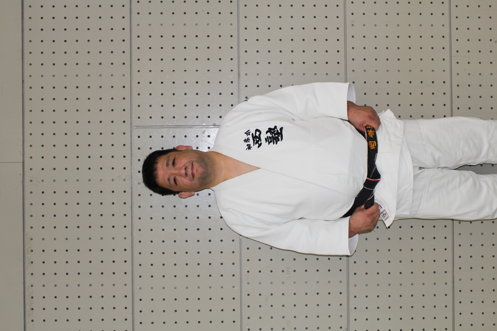
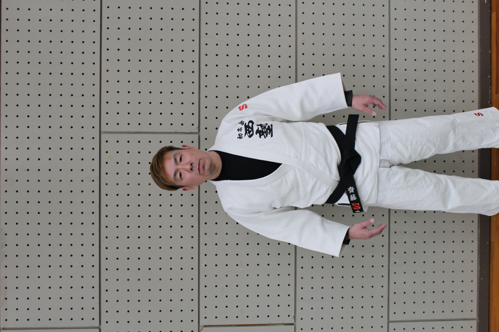
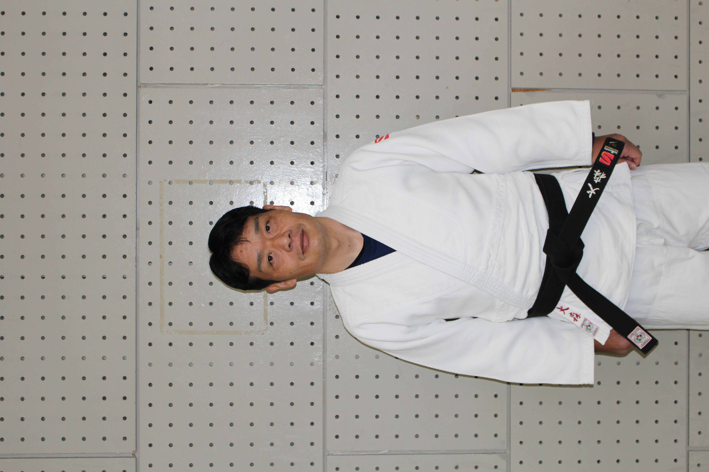
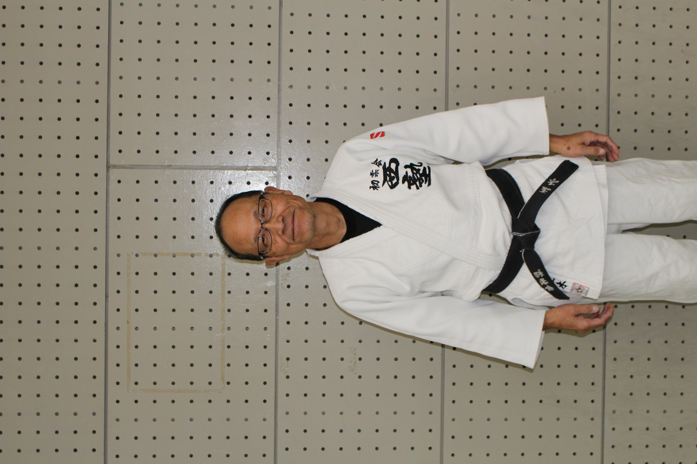
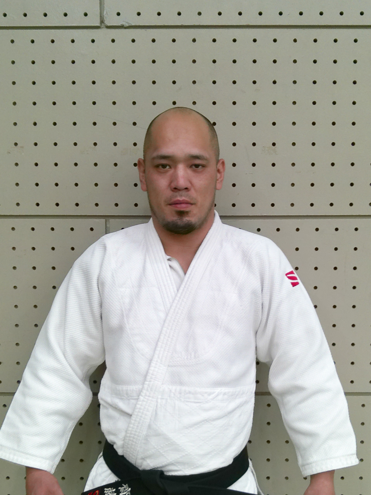
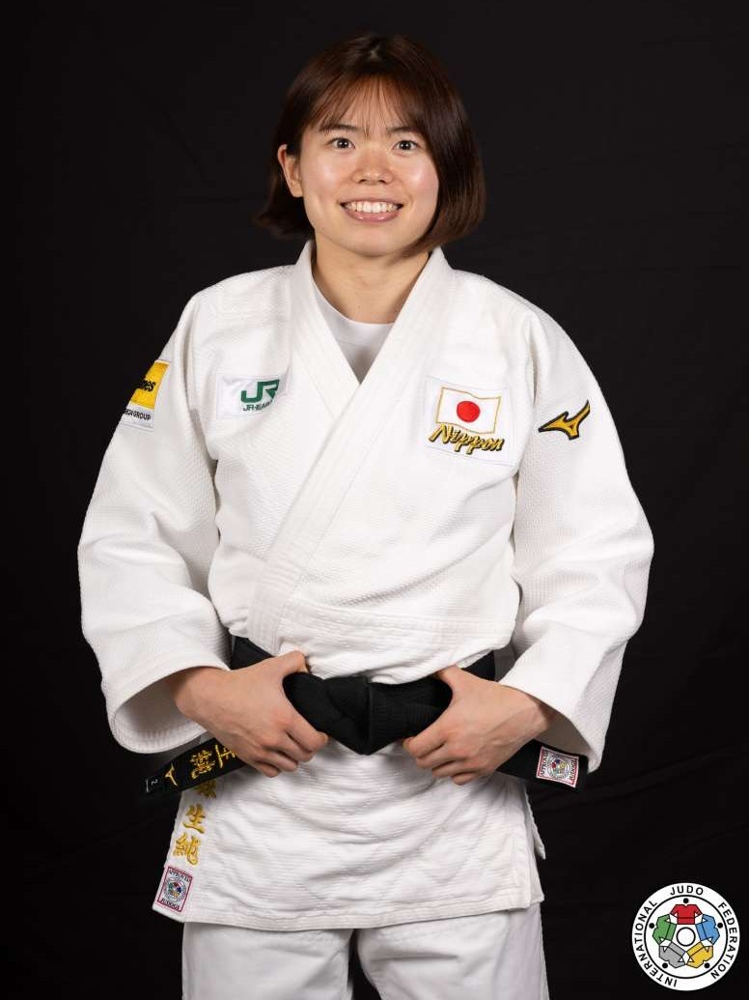
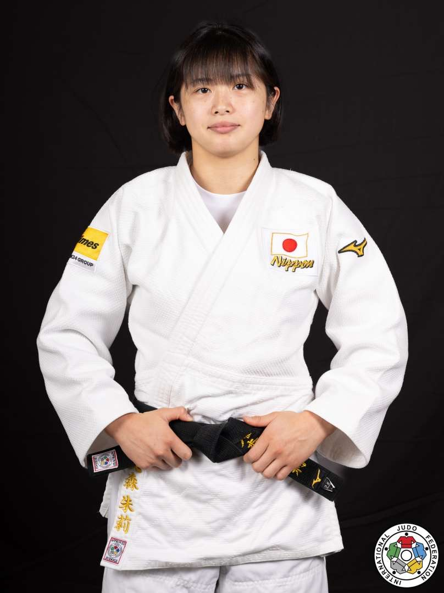
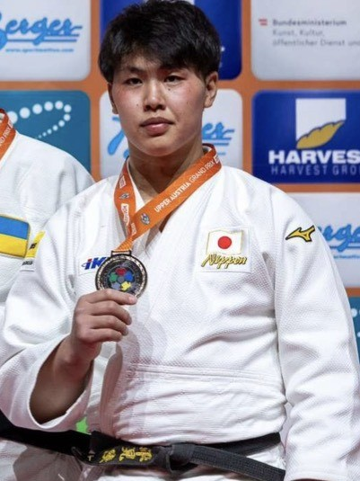

西塾の柔道
柔道をとおし、『強い心』『強い体』なにより、仲間を大切にする『思いやりの心』を育て、
チームのメンバーとの切磋琢磨で、心も体も成長するチームを目指しています。
『勝った時の嬉しさ』『負けた時の悔しさ』子供たちと一緒に、ともに喜び、ともに悔しがる。
子供も保護者も指導者も『西塾の柔道』をとおして成長する。
そんな道場であり続けたいと思っています
西塾の柔道
柔道をとおし、『強い心』『強い体』なにより、
仲間を大切にする『思いやりの心』を育て、
チームのメンバーとの切磋琢磨で、
心も体も成長するチームを目指しています。
『勝った時の嬉しさ』『負けた時の悔しさ』
子供たちと一緒に、ともに喜び、ともに悔しがる。
子供も保護者も指導者も
『西塾の柔道』をとおして成長する。
そんな道場であり続けたいと思っています
体験・問い合わせについて
西塾への体験を希望される方は、体験応募フォームから、必要事項を記載し送信していただくと、担当者（西または、齋藤）より後日連絡いたします。
希望される方は、『体験に応募する』ボタンをクリックし、体験応募フォームへ進んでください。
体験期間について
1. 体験回数は8回です。
2. 期間は、1回目の体験日から30日間です。
3. その他の内容及び質問等については、担当者からお話しさせて頂きます。
4. 体験の際は、『体験に応募する』ボタンの横にある『体験応募シート』をプリントアウトし、記載の上、ご持参下さい。
プリントアウトができない方は、体験で来られた際にお渡しいたします。
体験・問い合わせについて
西塾への体験を希望される方は、体験応募フォームから、
必要事項を記載し送信していただくと、
担当者（西または、齋藤）より後日連絡いたします。
希望される方は、『体験に応募する』ボタンをクリックし、
体験応募フォームへ進んでください。
体験期間について
1. 体験回数は8回です。
2. 期間は、1回目の体験日から30日間です。
3. その他の内容及び質問等については、
担当者からお話しさせて頂きます。
4. 体験の際は、『体験に応募する』ボタンの横にある
『体験応募シート』をプリントアウトし、
記載の上、ご持参下さい。
プリントアウトができない方は、
体験で来られた際にお渡しいたします。
先生紹介

塾長
西 卓郎
段位 5段
柔道歴 34年
現在までの経歴
中学1年生から柔道を始める。
78キロ級・90キロ級を経験後、ALOSKで実業団100キロ級で活動。29歳で引退した。
2009年初柔会西塾を立ち上げた。
活動方針
柔道を通して礼法・礼節を学んでもらい、心身の鍛錬及び仲間づくり
を行える場所として西塾を提供したいと思います。
『明るく！楽しく！激しく！元気よく！』を目指し、
子供達と一緒に柔道を学びたいと思います。
現在までの経歴
中学1年生から柔道を始める。
78キロ級・90キロ級を経験後、
ALOSKで実業団100キロ級で活動。29歳で引退した。
2009年初柔会西塾を立ち上げた。
活動方針
柔道を通して礼法・礼節を学んでもらい、
心身の鍛錬及び仲間づくりを行える場所として
西塾を提供したいと思います。
『明るく！楽しく！激しく！元気よく！』を目指し、
子供達と一緒に柔道を学びたいと思います。
所持ライセンス
全日本柔道連盟 指導者Bライセンス
全日本柔道連盟 審判Bライセンス

ヘッドコーチ
齋藤 和俊
段位 2段
柔道歴 35年
現在までの経歴
高校1年生から柔道を始め、セコムで実業団60㎏－の選手として活動。
28歳で現役を引退。ヘッドコーチとして残留。
2012年自身の子供達が西塾に入塾と同時に指導者として活動をはじめた。
活動方針
一緒に汗を流す仲間との触れ合いが子供たちを大きく育て、
勝ち負けだけでなく、仲間を思う逞しく、優しい『心』を育んでくれると思います。
西塾の経験が、子供たちの将来にとって、自信と勇気に繋がるように、
微力ですが手助けできればと思います。
現在までの経歴
高校1年生から柔道を始め、
セコムで実業団60㎏－の選手として活動。
28歳で現役を引退。ヘッドコーチとして残留。
2012年自身の子供達が西塾に入塾と同時に指導者として
活動をはじめた。
活動方針
一緒に汗を流す仲間との触れ合いが子供たちを大きく育て、
勝ち負けだけでなく、仲間を思う逞しく、
優しい『心』を育んでくれると思います。
西塾の経験が、子供たちの将来にとって、
自信と勇気に繋がるように、
微力ですが手助けできればと思います。

大森 剛
（OB大森きすみ・あかりの父）
段位 2段
柔道歴 25年
現在までの経歴
社会人になってから始めた草柔道。
子供達と一緒に西塾で稽古を始め、長女の生純・次女の朱莉を日本を代表する選手へと育てあげた。
現在三女が姉の背中を追い邁進中！
活動方針
メリハリをつけて取り組む姿勢を身につけて欲しいと思っています。
稽古は、時には辛く思うこともあるかと思いますが、
その先にある楽しさを知って欲しいと思います。
現在までの経歴
社会人になってから始めた草柔道。
子供達と一緒に西塾で稽古を始め、
長女のきすみ・次女のあかりを
日本を代表する選手へと育てあげた。
現在三女が姉の背中を追い邁進中！
活動方針
メリハリをつけて取り組む姿勢を
身につけて欲しいと思っています。
稽古は、時には辛く思うこともあるかと思いますが、
その先にある楽しさを知って欲しいと思います。
所持ライセンス
全日本柔道連盟 指導者Cライセンス

正木 幸彦
段位 6段
柔道歴 39年
現在までの経歴
中学1年生から高校卒業までの6年間を柔道に打ち込みました。
その後引退しましたが、社会人になり、36歳から再開して、
現在に至っています。
活動方針
体の続く限り、柔道の発展に努めていきたいと思います。
子供達に柔道を伝え、将来の日本の柔道界を支えてくれる人材に
なって頂けるように尽力していこと思っています。

小山 勇輝
段位 2段
柔道歴 20年
現在までの経歴
北九州福岡県で中学1年生から柔道を始め、
現在まで柔道の稽古を継続して行ってきました。
土曜日には、初柔会で自分自身の稽古もしながら
西塾の稽古にも参加しています。
活動方針
稽古や試合を通して、達成感をを持ってもらい、
柔道の楽しさを知ってもらいたいと思います。
精神の強さ、礼儀作法も身につけてもらい
目標とされる存在に育って欲しいと思います。
OB紹介

大森 生純
７歳で西塾にはいり、柔道をはじめる。
妹の朱莉・柚花とともに西塾立ち上げ時から
チームをささえた。
稽古熱心で妥協しない姿勢が仲間に刺激を与え、
今の西塾に受け継がれている。
現在は、日本を代表する52キロ級の選手として活躍。
2023年の成績
グランドスラム・バクー 優勝
グランドスラム・リンツ 優勝
全日本柔道選抜体重別選手権大会 2位
2024年の成績
グランドスラム・パリ 3位
全日本柔道選抜体重別選手権大会 2位
グランプリ・ザグレブ 優勝
グランドスラム・東京 優勝
2025年の成績
グランドスラム・パリ 優勝
全日本柔道選抜体重別選手権大会 2位
世界選手権 5位
グランドスラム・東京 5位

大森 朱莉
4歳で西塾にはいり、柔道をはじめる。
姉の生純・妹の柚花とともに西塾で汗を流した。
6年生になると、キャプテンとしてチームを
引っ張り、団体戦では、全国８位にはいるなど、
優秀な選手でした。
現在、日本を代表する57キロ級の選手として活躍。
2023年の成績
グランドスラム・タシケントト 3位
グランプリ・アッパー オーストリア 3位
ワールドユニバーシティゲームス 2位
ワールドユニバーシティゲームス 団体優勝
全日本柔道選抜体重別選手権大会 3位
2024年の成績
全日本学生柔道体重別団体優勝大会 3位
アジア選手権 個人3位 団体優勝
優勝大会 3位
全日本学生体重別 優勝
全日本柔道選抜体重別選手権大会 3位
2025年の成績
グランドスラム・タシケント 優勝
全日本実業柔道団体対抗大会 優勝
講道館杯 優勝
グランドスラム・東京 優勝

平見 陸
小学4年生から柔道を始め、6年生で西塾へ入塾
西塾では、1年間の在籍ではあったが、小学生最後
の年を西塾で稽古に励み、チームに大きな刺激を
与える存在でした。
現在は、日本を代表する100キロ級の選手として活躍。
2022年の成績
全日本ジュニア柔道体重別選手権大会 準優勝
2023年の成績
全日本ジュニア柔道体重別選手権大会 準優勝
2024年の成績
全日本体重別選手権100Kg級 優勝
全日本学生柔道優勝大会 準優勝
2025年の成績
グランプリ大会 3位
全日本学生柔道優勝大会 準優勝
全日本学生柔道体重別団体優勝大会 準優勝